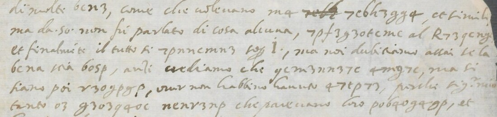

At a glanceCiphertext-only break · partial (85% of the cipher)
- The letter
- One page (c. 1r) beginning in mid-sentence: 29 lines of body and a postscript of about 12 lines, in clear Italian with 112 words or signs in cipher. The writer is Girolamo Augustoni by the library’s catalogue (the signature was not read); the recipient is addressed as “Sig.r mio” and “V.S.” and is not named. The date is 9 October 1612 by the verso docket (the month in the close is doubtful).
- Where
- Biblioteca Estense Universitaria, Modena, Autografoteca Campori, Lettera A, Augustoni, Girolamo, c. 1. Catalogue entry 1569; the record says “Lettera incompleta, parzialmente cifrata” and mentions no decipherment.
- The cipher
- A simple substitution with letter-like signs, 25 signs for 19 letters, used for single words and short phrases inside the clear letter, with word division kept. Persons are hidden twice over, by codes written in clear script with points (I., PP., 25. and .50.) that the key does not touch.
- How it was read
- An annealer with Italian quadgrams on the first transcription of the cipher words gave Italian with no crib; the key was completed by reading and frozen. The clear text was read afterwards, in full, by one reader.
- What it says
- A report on a negotiation over fiefs: the other side, the Provost and a hidden person “I.” and the doubt that the matter is settled; a letter of the Provost got hold of by cunning; advice to keep informed and on guard.
- Still open
- The codes for persons, the & sign, one unread unit in the gutter, signs under blots, the clear postscript, the signature, the parties and the fiefs. 56 of 370 words are holes by the README rule.
- Credit
- Transcriptions, key, reading and checks contributed by Malcolm McBratney (Brisbane), working with AI agents, as issue #427 and pull request #452 of 11–12 November 2026. Daniel Bourdeau recounted the figure (537 of 587, not 94.0%) and read three words from the image: ingano, astutia and scritura.
01 The letter
The page begins in mid-sentence and an earlier sheet is not in the record. It holds 29 lines of body and a postscript of about 12 lines, in clear Italian with single words and phrases in cipher; the verso has no cipher, only show-through and a docket. The close reads “li 9… 1612” with a month that is doubtful and “Di Carp.”, perhaps Carpi; the docket reads “… 9 8bre 1612”. The 600 units counted on the page are 580 cipher signs, three signs not legible, four clear-script letters inside cipher words, six of the abbreviation sign & and seven codes (I. five times, PP., 25.). The writer’s name rests on the library’s catalogue.

6cn3, is cose; the second, 7c6h3gg4, is Rochetta. Image: Biblioteca Estense Universitaria, Modena, Autografoteca Campori, Lettera A, Augustoni c. 1r (lines 1-5), via the Lodovico Media Library (CC BY-NC-SA).02 The cipher, and what is not the key
The key has 25 sign-to-letter values (key.tsv): two signs each for a, c, e, g and u, three for p, and u and v as one letter; there is no q, z or x sign. The sign names are the transcribers’. The decode also leans on three things that are not the key, all listed in the folder:
- Renamed labels (19 units for the first two, 3 for the third): the blind reader named two signs differently from the consensus (R for K, D for z), and a third (x) is the looped t sign. These are the same written signs under other names; no reading decision is involved.
- One split made after decoding (8 units): the blind reader used one label for the plain u (f in the key) and for a rounded form read as the n sign. The split into two was made after the decode was known, by a reader who knew each word. In the blind transcription’s own count all 8 are emended; the reviewer’s strict count below does not count them, and counting them gives 90.3%.
- 13 overrides by coordinate: four clear-script letters inside cipher words, six cipher signs given a value from context and three marked unread. All 13 are listed in
overrides.tsv; none counts as read. The issue listed only four of them.
The sign & (an abbreviation compound) and the codes I., PP., 25. and .50. have no key value. “Per” for & is read from context at four places and not read at two.
03 How the key was found
- A first transcription of the cipher words, frozen. An annealer with an Italian quadgram model (four restarts of 20,000 steps, no crib, no gloss) gave Italian in two restarts (rimetendolo, volessero, dubitiamo, li feudi, compromesso) and showed that this pass had merged two pairs of signs.
- A second transcription by the same reader, made after the solver output and so not blind; the key was frozen from it.
- A blind second transcription by another session that opened only the images, frozen before it opened the key or any decode.
- A consensus of the two, settled on crops, with one decoder, a file of label aliases and the 13 overrides, stamped on 11 November 2026.
- 12 November: Daniel Bourdeau’s readings checked on the image, the clear text read in full for the first time, and the files completed.
The method is a key recovered from the ciphertext alone. That the key was frozen on 11 November and the blind transcription made before it was opened rests on the contributor’s record (his own manifests and md5 values): the RFC 3161 token imprints and the stamped files he sent agree with it, and nothing outside his files fixes the order. The clear text was used afterwards, for the overrides and for doubtful words, not to find the key.
04 The reading
The letter is clear text with cipher words inserted, and the reading gives both as one text. Cipher words are in capitals in decryption.txt; in the text below, [?word] is a doubtful word, […] not read, a bracketed letter a letter supplied or emended, and [I.], [PP.], [25], [50] are codes for persons that are not identified.
[c. 1r; the page begins in mid-sentence] di molte cose, come che volevano, ma […] Rochetta et simili; ma da [50] non fu parlato di cosa alcuna, rimetendolo al Prevost[o], et finalmente il tutto si rissolse [?per] [I.]. Ma noi dubitiamo assai se la cosa sia co[si]; anzi crediamo che volessero altro, ma si siano poi pentiti, over non habbino havuto ardire, perché, Sig.r mio, tanto ne tenevano sospesi che [?parevano] loro incantati, et [?haveriano] fatto dubitar li punti. […]
of many things, such as that they wanted, but […] Rochetta and the like; but by [50] nothing at all was said, the matter being referred to the Provost, and in the end the whole was settled [?by] [I.]. But we doubt very much whether the thing is [?so]; rather we believe that they wanted something else, but have since thought better of it, or have not had the nerve, because, my lord, they kept us so much in suspense that they [?seemed] spellbound themselves, and [?would have] put the points in doubt. […]
The rest runs on the same footing: the ministers pressed harder than I. himself for the fiefs not to be shut out of the compromesso (the agreement to go to arbitration), the Grand Chancellor and the Provost were agreed, and “with cunning” the writer’s side has got hold of a letter of the Provost, saying that a certain addition can only mean the total exclusion of the fiefs, the last words being there to save appearances. Or perhaps they mean no such thing: the deed is only a private one, without a penalty, and the party is a minor. I. was very low and tried in vain to visit PP. The reader is told to keep informed and on guard, not to show his hand without need, and to take care in writing to the Provost. The postscript adds that the Governor of Milan has offered to write to the King and has written to the Spanish ambassador, and that the writer doubts whether “50” is in earnest. Reading and translation are complete in the Full texts below, with every hole in place; the end of the postscript, the names, the place and the signature are read only in part.
The parties are not established. “Gran Canceliero”, “Governor of Milan”, “the King” and “Ambassador of Spain” suggest the Spanish State of Milan, and “Di Carp.” may be Carpi; neither is verified, and which fiefs and which house are meant is not known. The issue’s first reading of .50. as “S.S.” (the Pope) was a misreading, withdrawn: the sign is a code written with points, like 25., and the Pope does not appear.
Three readings from the image. On line 16 a long faint stem before the u sign had been dropped by both transcriptions; with the rounded u it gives ingano (“et scoprir l’ingano”), a word the issue had left unread. On line 19 the word is astutia, with the s emended and the u under a blot. On lines 17–18 the sign before the line break is the small 7 form, r, giving scr[i]tura. On line 14 the sign under a blot is taken as n, consenso (the first pass had s, conscesso, not a word), and on line 4 the clear word is sia, not sua.
05 What was counted and checked
| Measure | Result |
|---|---|
| Words read, README rule (clear text and cipher together) | 314 words read and 56 holes (370 in all): 0.849; an integration recount that treats bracketed groups as one word gives 355 words with the bracketed groups counted as one, 53 of them holes: 0.851. Codes, doubtful clear words and every word with a supplied or emended letter are holes. |
| Cipher units, strict (the reviewer’s rule, 587 units, transcription frozen on 11 November) | 537 of 587 = 91.5% give the letter read by the key and the aliases (the contributor’s own count by the same rule is 538); 35 are emended and 15 unread. With the 8 rounded-u units also emended, 530 on the contributor's base of 538 = 90.3%. The blind transcription by the same rule: 517 = 88.1%. |
| The issue’s 94.0% | Withdrawn. It left four clear-script letters inside cipher words out of the total and kept ten units of two emended words, cosi and conscesso, as read. The tallies reconcile to one unit in counts.txt (538 against the reviewer’s 537), whose source is inferred, not confirmed. |
| Shuffled keys (the contributor’s run) | The blind transcription under the key puts 394 of 587 cipher signs in Italian dictionary words (67.1%); the best of 5,000 shuffled keys puts 60 (10.2%). |
Statistical test here (docs/_validate.py, 583 cipher tokens after the image review) | Pass: the reading scores -2.179 per letter, random keys -4.981, a key fitted to shuffled ciphertext at best -2.979. |
| Decoder written separately here | Reproduces the decryption of all 30 lines that carry cipher (112 cipher words) from the key and the aliases. |
The consensus transcription is not blind, the image review of 12 November and the whole clear text are the work of one reader who knew the key and the proposed words, and no second reader has seen them. The transcription was not re-imaged here; an earlier check of the issue compared about 35 cipher words (about 200 signs) with the image and found the readings above. No person read the signs without AI.
06 What remains uncertain
- Codes. I. (five times), PP., 25. and .50. (twice, in the clear text) are not identified, and no other letter of the correspondence has been looked for.
- The & sign (six units) has no key value.
- One unread unit: the sign in the gutter at the start of line 10, proposed as “ve” from the sense. Signs under blots on lines 14 and 19, and one sign emended against its shape on line 19, are values taken from the word.
- The rounded u read as n (8 units) is the one reading decision made after the decode; a blind re-transcription would test it.
- The clear text. Doubtful words in the body, the postscript read in part, and the names, the place and the signature not established.
- Prior art. None found; Correggio (“Notizie sparse della famiglia Augustoni”), the Archivio di Stato di Milano and the printed Campori catalogue were not reached.
- Catalogue. Entry 1569 listed Augustoni and an unrelated letter of Olivazzi (1725); Olivazzi stays.
Full texts
The transcription and the decryption of every document on this page, so that the reading can be used and checked. Short files are shown here; all are in the repository.
Augustoni, 9 Oct 1612, c. 1r read in part
Part of a report to a correspondent addressed as 'Sig.r mio', on a negotiation over fiefs; Rochetta is named. A person hidden as 50 said nothing and referred the matter to the Provost, and it was settled through a person hidden as I. The writer doubts this: the other side wanted something else and lost their nerve. The ministers pressed harder than I. for the fiefs not to be excluded from the 'compromesso', and the Grand Chancellor and the Provost were agreed. By cunning the writer's side has got a letter of the Provost saying that a certain addition can only mean the total exclusion of the fiefs. I. was very low and tried in vain to visit PP. The reader is to keep informed, not show his hand without need, and take care in writing to the Provost. Postscript: the Governor of Milan has offered to write to the King and has written to the Spanish ambassador.
Builds coherent sentences, but under the read bar of 95% of words read as sense (85% here); the holes are marked in the reading.
Transcription
# Augustoni, 9 Oct 1612. Biblioteca Estense Universitaria, Modena, Autografoteca Campori, Lettera A, Augustoni, Girolamo, c. 1r.
# Full transcription of the page: clear text and cipher, line by line as on the sheet.
#
# CIPHER, in {braces}: the consensus sign labels exactly as frozen and stamped on 11 Nov 2026
# (timestamps/repair/stamped/WORDS.tsv, column consword). scripts/build.py checks that the braces here equal that file,
# word for word. Nothing found on the image on 12 Nov 2026 has been written into the braces: the four places where the
# image shows something else are listed in review.tsv and applied in units.tsv (columns label_v2, st_v2).
# Sign labels are ours, by look (legend: key.tsv; the blind reader's own legend is at the head of transcription_blind.txt).
# {&} = the abbreviation compound, one unit. {I.} {PP.} {25.} = codes written in clear script with points. ? = a sign not
# legible (gutter, blot). υ = the rounded u-form (see aliases.tsv).
# CLEAR TEXT, outside the braces: read from the image on 12 Nov 2026 by one reader (a Claude session), after the key was
# known, from 1.25x bands and 3x to 7x crops of the stitched IIIF page. It is NOT part of the frozen transcription and has
# had no second reader. (?) after a word = doubtful. [...] = not read. [struck] = a deleted word or sign. Abbreviations
# are left as written (Sig.r, Gov.r, sub.to, Amb.r, m.ti). u and v are printed by modern use. .50. is written like the
# codes, with points; we take it for a code.
# Line names: L01-L29 the body, PS1 the postscript line with cipher (names as in the stamped ledger); C30-C41 the other
# lines of the postscript and close, clear only. The page begins in mid-sentence (an earlier sheet is not in the record).
# The verso has no cipher (bleed-through and a docket "... 9 8bre 1612").
L01 | di molte {6cn3}, come che volevano ma [struck] {7c6h3gg4}, et simili,
L02 | ma da .50. non fu parlato di cosa alcuna, {7pf3g3otcmc} al {R73qcng}
L03 | et finalmente il tutto si {7pnncmn3} {&} {I.}, ma noi dubitiamo assai se la
L04 | {6cna} sia {6osp}, anzi crediamo che {ycm3nn37c} {4mg7c}, ma si
L05 | siano poi {v3ogpgp}, over non habbino havuto {47tp7D}, perche Sig.r mio
L06 | tanto {o3} {g3o3q4oc} {ncnv3np} che parevano(?) loro {po64υg4gp}, et
L07 | haveriano(?) fatto {tqipg47} {mp} {Hyυgp}.
L08 | Et se pur la {q374} {64yn4} è statto {&} {I.} {tqipgp4fc} assai siano d'
L09 | {f6c7tc} {736c} di ricever {m3} {ny3} {74lpcop} {&} {mp} [struck] {u3qtp} {n3}
L10 | {?3} {o3} {h4}, perche hanno scritti(?) piu {mp} {fpopng7p} che hanno {pong4gc}
L11 | di non {3n6mqt37D} {mp} {uDytp} nel {6cfv7cf3nnc} che l' {png3nnc} {I.},
L12 | et erano d'acordo il {L74υ} {64υ63mp37c} et il {R73qcngc} {Zq4nnp} hanno
L13 | {&} {υ3lcgp4gc} il tutto, et percio havevano qualche {tqipc} che fossimo(?)
L14 | noi(?) [struck] {7p637647D} il {6con6D?nc} d' {4v}. et però {25.} starà(?) {4qD7gpg4}
L15 | se {n3ogpnnD} cosa alcuna di questo d' {cvvc7np}, et scoprir l'
L16 | {ul4oc}, perche coloro(?) loro hanno {&} ditto che una {pfv37gpυDυ64}
L17 | d' {I.}, tuttavia hanno {qcmygc} come per {uc764} {u47} {m4} {n6y}-
L18 | {gq74} {L3oD74m3} piu che hanno {vcgqgc}
L19 | Habbiamo però con {47g?gp4} cavato(?) {qo4} {mDg374}, del {R73qcn}
L20 | {tcqD} [struck] {tp63}, Che al sicuro quella {allpcog4} non puol {nplopup6473}
L21 | {4mg7c} che [struck] {m4} {gcgg4m} {3n6mqnpco3} delli {a3qtp}, et quelle
L22 | {v47cmD} {ymgpf3} esser {&} {hco3g473} la {64qn4}, Puol anco esser
L23 | che {ocυ} {h4iioc} {g4m} {v3onp37c} per molte congietture che ci con-
L24 | corrono, come in {a47} solamente {n67pgq74} {v7pq4g4}, senza
L25 | {v3o4} et tanto piu essendo {fpoc7D}, et di piu {I.} stava molto
L26 | {famDo6cop6c}, et ha assai procurato di {qpnpg473}. {PP.} ma non ha
L27 | mai {qcmygc}, e però bene(?) siate {pouc7f4gc} et stiate(?) {4qD7gpgc} ma
L28 | non {qp} {n6cv7pg3} senza {ipncloc}, et ancora siate(?) cauto nel
L29 | scriver al {R73qcngc}
C30 | Mi era poi scordato di dire che il S.r Gov.r di Milano sub.to si è offerto di
C31 | scriver al Re acciò scriva alla [...] per il [...], et che ancora scriverà(?)
C32 | et ha ancor già scritto a cotesto Amb.r di Spagna per l'istesso(?) effetto,
PS1 | Io [struck] {tqipgc} assai se .50. dica da {tcq37c} di .Prima.(?), coloro(?) mostra(?)
C34 | di si ma l'ho(?) per fintioni, tuttavia Dio(?) sia quello ci aiuti
C35 | [...] Nicolò Franchetti(?), [...] et suo filiolo il Rosso [...],
C36 | [...] da [...], il [...], et vi sono stati m.ti amalati
C37 | [...] siamo stati a Milano, non altro di novo, ma per esser stracco(?)
C38 | vi baso le mani. Di Carp.(?) li 9. ottobre(?) 1612.
C39 | Di V.S. [...] ser.re(?) aff.mo(?) [...] et S.re(?)
C40 | [...] che la lettera è statta mandata a Milano [signature: not read by us]
C41 | et si manderà(?) a [...]Transcription
# aug_R2.txt BLIND SECOND READER (R2). Augustoni to [?], 9 Oct 1612, Estense Autografoteca Campori, Augustoni c.1r.
# Image: dl/c1r.jpg (2390x3508, stitched from 1024 px IIIF tiles; md5 4cb575e7a930ea49ac2c072692e259e7, identical to b48 stitch).
# Read sign by sign from crops/L*.jpg (1.8x line strips), crops/z*.jpg and crops/v*.jpg (2.2x-5x). KEY, pass 1/2, decodes and marks NOT opened before freeze.
# Verso (dl/c1v.jpg): no cipher; bleed-through only, plus docket top right.
#
# SIGN LABELS (my own, by look):
# 7 = horizontal top + straight diagonal (sometimes small left-curling foot)
# z = 7-form with foot running right (one instance, L12)
# 3 = z/3-form WITH a kink in the middle ("ʒ")
# D = single smooth reversed-c curve with tail ("ɔ"); distinct from 3 (no kink) and 7 (rounded)
# 4 = open triangular bowl, SHORT descender, crossbar running right (often joins next sign)
# q = closed round bowl, LONG straight descender, no crossbar
# y = open fork top ("ч"), descender
# g = bowl with looped descender (loop runs back left)
# x = s-like top, crossing stroke, loop bottom-left
# 6 = tall ascender + closed bowl (sometimes small entry tick)
# o = closed small circle; u = open u-form (either "ιι" or rounded "υ" with heavy top-right tick)
# a = closed a-form (distinct from u: bowl closed); v = pointed ν-form with flourish
# n, m, c, e, p, f, t, h, H, R, i (dotted), s = letter-like signs as named
# L = vertical with angular foot right (word-initial); l = tall curved ascender (ℓ), often ligatured
# & = compound abbreviation sign: h-like stroke (+ n/v-like stroke) + crossed looped descender (like clear 'per' ꝑ with prefix). Read as ONE unit; meaning not known blind.
# ? = illegible sign; [..] = note
# Person/number codes written in clear: I. (x5), PP. (x1), 25. (x1). Listed per line as CODE.
#
# FORMAT: Lnn | cipher words in order (space-separated) || notes
L01 | 6cn3 7c6h3gg4 || 'di molte 6cn3, come che volevano ma [struck word] 7c6h3gg4 et simili'; in 6cn3 the n is re-inked (n? could be m)
L02 | 7pf3g3otcmc R73qcng || '...di cosa alcuna, 7pf3g3otcmc al R73qcng[edge]'; a final sign may be lost at the torn right edge
L03 | 7pnncmn3 & || 'et finalmente il tutto si 7pnncmn3 & I., ma noi dubitiamo assai se la'; first sign 7 with left-curling foot; CODE I.
L04 | 6cna 6osp ycm3nn37c 4mg7c || '6cna sua 6osp, anzi crediamo che ycm3nn37c 4mg7c, ma si'
L05 | v3ogpgp 47tp7D || 'siano poi v3ogpgp, overo non habbiamo havuto 47tp7D, perche Sig.r mio'; v3ogpgp last sign p with heavy foot
L06 | o3 g3o3q4oc nenv3np po64ug4op || 'tanto o3 g3o3q4oc nenv3np che pareriano loro po64ug4op, et'; in po64ug4op sign 8 is a large leaf-shaped loop read o (o?)
L07 | tqipg47 mp H4ugp || 'l'haviamo fatto tqipg47 mp H4ugp.'
L08 | q374 64yn4 & tqipxp4fc || 'Et sopra la q374 64yn4 e stato & I. tqipxp4fc assai siano di'; CODE I.
L09 | f6c7tc 736c m3 ny3 74lpcop & mp u3qtp n3 || black dirt spot on the fold over f6c7tc between c and 7 (no sign hidden, read c7); a struck word before u3qtp (not read)
L10 | p3 o3 h4 mp fpopng7p pong4gc || first sign of p3 at the gutter edge, uncertain (p?); 'perche hanno cantato piu mp fpopng7p che hanno pong4gc'
L11 | 3n6mqt37D mp uDytp 6cfv7cf3Dmc png3nnc || 'di non 3n6mqt37D mp uDytp nel 6cfv7cf3Dmc che l' png3nnc I.,'; in 6cfv7cf3Dmc the m is written as i-stroke + n (m?); CODE I.
L12 | L74u 64u63mp37c R73qcngc zq4Dmp || 'et erano d'accordo il L74u 64u63mp37c et il R73qcngc zq4Dmp hanno'; zq4Dmp: m written as i-stroke + n
L13 | & u3lcgp4gc tqipc || '& u3lcgp4gc il tutto, et percio havevano qualche tqipc che fossimo'; this & has a clear n-like middle stroke
L14 | 7p637647D 6con6D?xc 4v 4qD7gpg4 || 'mi [struck] 7p637647D il 6con6D?xc d'4v. et pero 25. cura(?) 4qD7gpg4'; in 6con6D?xc an ink blot covers one possible sign (?); 4v followed by a point (abbreviation); CODE 25.
L15 | n3ogpnnD cvvc7np || 'se n3ogpnnD cosa alcuna di quello d'cvvc7np, et saperio l''
L16 | ul4oc & pfv37gpuDu64 || 'ul4oc, perche loro hanno & ditto che una pfv37gpuDu64'
L17 | qcnygc uc764 u47 m4 n6y || 'd'I. tuttavia(?) hanno qcnygc come per uc764 u47 m4 n6y-'; n6y- is hyphenated, continues L18; last sign before hyphen small, y?; CODE I.
L18 | yq74 L3oD74m3 vcg4gc || word across lines = n6y-yq74 (count as ONE word, 7 signs); 'L3oD74m3 piu che hanno vcg4gc.'
L19 | 47y?gp4 qo4 mDg374 R73qcn || 'Habbiamo poi con 47y?gp4 tanto qo4 mDg374, del R73qcn[torn]'; black blot covers sign 4 of 47y?gp4 (a descender shows below: q/p/f/g?); in mDg374 the D could be 3; R73qcn: rest lost in tear
L20 | tcqD tp63 lpcog4 nplopup6473 || 'tcqD [6 struck]tp63, Chi al tempo quello al lpcog4 non puol nplopup6473'; a 6 is struck through before tp63 (not counted); 'al' before lpcog4 read as clear
L21 | 4mg7c m4 gcxg4m 3n6mqnpco3 a3qtp || '4mg7c che [struck m4] m4 gcxg4m 3n6mqnpco3 delli a3qtp, et quelle'; first sign of a3qtp is a CLOSED a (contrast u3qtp L09, uDytp L11)
L22 | v47cmD l ymgpf3 & hco3g473 64qn4 || 'v47cmD l ymgpf3 e & hco3g473 la 64qn4, Puol aver ella'; 'l' is a lone thin vertical stroke (may be a mark, not a sign); 'e' and 'la' read as clear
L23 | ocu h4iioc g4m v3onp37c || 'che ocu h4iioc g4m v3onp37c per molte congietture che ci con-'
L24 | a47 n67pgq74 v7pq4g4 || 'corsono, come in a47 solamente n67pgq74 v7pq4g4, anzi la'; a47 has a CLOSED a (contrast u47 L17)
L25 | v3o4 fpoc7D || 'v3o4 et tanto piu essendo fpoc7D, et di piu I. scaca(?) molto'; CODE I.
L26 | fam7o6copp6c ppnpg473 || 'fam7o6copp6c, et havendo procurato di ppnpg473. PP. ma non la'; CODE PP.
L27 | qcmygc pouc7f4gc 4qD7gpgc || 'mai qcmygc, e pero si stato(?) pouc7f4gc et stato 4qD7gpgc ma'; 4qD7gpgc signs 5-6 overwritten/corrected
L28 | qp n6cv7pg3 ipncloc || 'non qp n6cv7pg3 su la(?) ipncloc, et ancora hatti cauto nel'; 'su la' read as clear (could be cipher s-n-l-a)
L29 | R73qcngc || 'dicevo(?) al R73qcngc'
PS1 | tqipgc tcq37c || postscript: 'Se [struck] tqipgc assai che S.S. dica da tcq37c di Prima,'
# END R2Decryption
# Decryption, line by line against transcription.txt. For each line with cipher:
# T the line as transcribed (cipher in braces)
# K each cipher word under the key and the label aliases alone, no overrides (? = no key value; & and the codes pass through)
# R the reading adopted after the review of 12 Nov 2026: {x} a letter supplied, <x> lost at the torn edge, ? no value, (x) a value from an override or an emendation, & the abbreviation sign where it is not read (L13, L16; elsewhere PER, from context). CAPITALS = from cipher; lower case = clear text.
# Lines without cipher (C30-C41) are given once.
L01 T di molte {6cn3}, come che volevano ma [struck] {7c6h3gg4}, et simili,
L01 K di molte COSE, come che volevano ma [struck] ROCHETTA, et simili,
L01 R di molte COSE, come che volevano ma [struck] ROCHETTA, et simili,
L02 T ma da .50. non fu parlato di cosa alcuna, {7pf3g3otcmc} al {R73qcng}
L02 K ma da .50. non fu parlato di cosa alcuna, RIMETENDOLO al PREUOST
L02 R ma da .50. non fu parlato di cosa alcuna, RIMETENDOLO al PREVOST<O>
L03 T et finalmente il tutto si {7pnncmn3} {&} {I.}, ma noi dubitiamo assai se la
L03 K et finalmente il tutto si RISSOLSE & I., ma noi dubitiamo assai se la
L03 R et finalmente il tutto si RISSOLSE PER I., ma noi dubitiamo assai se la
L04 T {6cna} sia {6osp}, anzi crediamo che {ycm3nn37c} {4mg7c}, ma si
L04 K COSA sia CN?I, anzi crediamo che UOLESSERO ALTRO, ma si
L04 R COSA sia C(O)(S)I, anzi crediamo che VOLESSERO ALTRO, ma si
L05 T siano poi {v3ogpgp}, over non habbino havuto {47tp7D}, perche Sig.r mio
L05 K siano poi PENTITI, over non habbino havuto ARDIRE, perche Sig.r mio
L05 R siano poi PENTITI, over non habbino havuto ARDIRE, perche Sig.r mio
L06 T tanto {o3} {g3o3q4oc} {ncnv3np} che parevano(?) loro {po64υg4gp}, et
L06 K tanto NE TENEUANO SOSPESI che parevano(?) loro INCANTATI, et
L06 R tanto NE TENEVANO SOSPESI che parevano(?) loro INCANTATI, et
L07 T haveriano(?) fatto {tqipg47} {mp} {Hyυgp}.
L07 K haveriano(?) fatto DUBITAR LI PUNTI.
L07 R haveriano(?) fatto DUBITAR LI PUNTI.
L08 T Et se pur la {q374} {64yn4} è statto {&} {I.} {tqipgp4fc} assai siano d'
L08 K Et se pur la UERA CAUSA è statto & I. DUBITIAMO assai siano d'
L08 R Et se pur la VERA CAUSA è statto PER I. DUBITIAMO assai siano d'
L09 T {f6c7tc} {736c} di ricever {m3} {ny3} {74lpcop} {&} {mp} [struck] {u3qtp} {n3}
L09 K MCORDO RECO di ricever LE SUE RAGIONI & LI [struck] FEUDI SE
L09 R (A)CORDO RECO di ricever LE SUE RAGIONI PER LI [struck] FEUDI SE
L10 T {?3} {o3} {h4}, perche hanno scritti(?) piu {mp} {fpopng7p} che hanno {pong4gc}
L10 K ?E NE HA, perche hanno scritti(?) piu LI MINISTRI che hanno INSTATO
L10 R ?E NE HA, perche hanno scritti(?) piu LI MINISTRI che hanno INSTATO
L11 T di non {3n6mqt37D} {mp} {uDytp} nel {6cfv7cf3nnc} che l' {png3nnc} {I.},
L11 K di non ESCLUDERE LI FEUDI nel COMPROMESSO che l' ISTESSO I.,
L11 R di non ESCLUDERE LI FEUDI nel COMPROMESSO che l' ISTESSO I.,
L12 T et erano d'acordo il {L74υ} {64υ63mp37c} et il {R73qcngc} {Zq4nnp} hanno
L12 K et erano d'acordo il GRAN CANCELIERO et il PREUOSTO ?UASSI hanno
L12 R et erano d'acordo il GRAN CANCELIERO et il PREVOSTO (Q)UASSI hanno
L13 T {&} {υ3lcgp4gc} il tutto, et percio havevano qualche {tqipc} che fossimo(?)
L13 K & NEGOTIATO il tutto, et percio havevano qualche DUBIO che fossimo(?)
L13 R & NEGOTIATO il tutto, et percio havevano qualche DUBIO che fossimo(?)
L14 T noi(?) [struck] {7p637647D} il {6con6D?nc} d' {4v}. et però {25.} starà(?) {4qD7gpg4}
L14 K noi(?) [struck] RICERCARE il CONSCE?SO d' AP. et però 25. starà(?) AUERTITA
L14 R noi(?) [struck] RICERCARE il CONSCE(N)SO d' (A)(V). et però 25. starà(?) AVERTITA
L15 T se {n3ogpnnD} cosa alcuna di questo d' {cvvc7np}, et scoprir l'
L15 K se SENTISSE cosa alcuna di questo d' OPPORSI, et scoprir l'
L15 R se SENTISSE cosa alcuna di questo d' OPPORSI, et scoprir l'
L16 T {ul4oc}, perche coloro(?) loro hanno {&} ditto che una {pfv37gpυDυ64}
L16 K FGANO, perche coloro(?) loro hanno & ditto che una IMPERTINENCA
L16 R (I)(N)GANO, perche coloro(?) loro hanno & ditto che una IMPERTINENCA
L17 T d' {I.}, tuttavia hanno {qcmygc} come per {uc764} {u47} {m4} {n6y}-
L17 K d' I., tuttavia hanno UOLUTO come per FORCA FAR LA SCU-
L17 R d' I., tuttavia hanno VOLUTO come per FORCA FAR LA SC(R)-
L18 T {gq74} {L3oD74m3} piu che hanno {vcgqgc}
L18 K TURA GENERALE piu che hanno POTUTO
L18 R {I}TURA GENERALE piu che hanno POTUTO
L19 T Habbiamo però con {47g?gp4} cavato(?) {qo4} {mDg374}, del {R73qcn}
L19 K Habbiamo però con ART?TIA cavato(?) UNA LETERA, del PREUOS
L19 R Habbiamo però con A(S)T(U)TIA cavato(?) UNA LETERA, del PREVOS<TO>
L20 T {tcqD} [struck] {tp63}, Che al sicuro quella {allpcog4} non puol {nplopup6473}
L20 K DOUE [struck] DICE, Che al sicuro quella AGGIONTA non puol SIGNIFICARE
L20 R DOVE [struck] DICE, Che al sicuro quella AGGIONTA non puol SIGNIFICARE
L21 T {4mg7c} che [struck] {m4} {gcgg4m} {3n6mqnpco3} delli {a3qtp}, et quelle
L21 K ALTRO che [struck] LA TOTTAL ESCLUSIONE delli AEUDI, et quelle
L21 R ALTRO che [struck] LA TOTTAL ESCLUSIONE delli (F)EUDI, et quelle
L22 T {v47cmD} {ymgpf3} esser {&} {hco3g473} la {64qn4}, Puol anco esser
L22 K PAROLE ULTIME esser & HONETARE la CAUSA, Puol anco esser
L22 R PAROLE ULTIME esser PER HONE{S}TARE la CAUSA, Puol anco esser
L23 T che {ocυ} {h4iioc} {g4m} {v3onp37c} per molte congietture che ci con-
L23 K che NON HABBNO TAL PENSIERO per molte congietture che ci con-
L23 R che NON HABB{I}NO TAL PENSIERO per molte congietture che ci con-
L24 T corrono, come in {a47} solamente {n67pgq74} {v7pq4g4}, senza
L24 K corrono, come in AAR solamente SCRITURA PRIUATA, senza
L24 R corrono, come in (F)AR solamente SCRITURA PRIVATA, senza
L25 T {v3o4} et tanto piu essendo {fpoc7D}, et di piu {I.} stava molto
L25 K PENA et tanto piu essendo MINORE, et di piu I. stava molto
L25 R PENA et tanto piu essendo MINORE, et di piu I. stava molto
L26 T {famDo6cop6c}, et ha assai procurato di {qpnpg473}. {PP.} ma non ha
L26 K MALENCONICO, et ha assai procurato di UISITARE. PP. ma non ha
L26 R MALENCONICO, et ha assai procurato di VISITARE. PP. ma non ha
L27 T mai {qcmygc}, e però bene(?) siate {pouc7f4gc} et stiate(?) {4qD7gpgc} ma
L27 K mai UOLUTO, e però bene(?) siate INFORMATO et stiate(?) AUERTITO ma
L27 R mai VOLUTO, e però bene(?) siate INFORMATO et stiate(?) AVERTITO ma
L28 T non {qp} {n6cv7pg3} senza {ipncloc}, et ancora siate(?) cauto nel
L28 K non UI SCOPRITE senza BISOGNO, et ancora siate(?) cauto nel
L28 R non VI SCOPRITE senza BISOGNO, et ancora siate(?) cauto nel
L29 T scriver al {R73qcngc}
L29 K scriver al PREUOSTO
L29 R scriver al PREVOSTO
C30 T Mi era poi scordato di dire che il S.r Gov.r di Milano sub.to si è offerto di
C31 T scriver al Re acciò scriva alla [...] per il [...], et che ancora scriverà(?)
C32 T et ha ancor già scritto a cotesto Amb.r di Spagna per l'istesso(?) effetto,
PS1 T Io [struck] {tqipgc} assai se .50. dica da {tcq37c} di .Prima.(?), coloro(?) mostra(?)
PS1 K Io [struck] DUBITO assai se .50. dica da DOUERO di .Prima.(?), coloro(?) mostra(?)
PS1 R Io [struck] DUBITO assai se .50. dica da DOVERO di .Prima.(?), coloro(?) mostra(?)
C34 T di si ma l'ho(?) per fintioni, tuttavia Dio(?) sia quello ci aiuti
C35 T [...] Nicolò Franchetti(?), [...] et suo filiolo il Rosso [...],
C36 T [...] da [...], il [...], et vi sono stati m.ti amalati
C37 T [...] siamo stati a Milano, non altro di novo, ma per esser stracco(?)
C38 T vi baso le mani. Di Carp.(?) li 9. ottobre(?) 1612.
C39 T Di V.S. [...] ser.re(?) aff.mo(?) [...] et S.re(?)
C40 T [...] che la lettera è statta mandata a Milano [signature: not read by us]
C41 T et si manderà(?) a [...]Reading
# Augustoni, 9 Oct 1612 (Biblioteca Estense, Autografoteca Campori, Augustoni c. 1r): reading ## Reading [c. 1r; the page begins in mid-sentence] di molte cose, come che volevano, ma [...] Rochetta et simili; ma da [50] non fu parlato di cosa alcuna, rimetendolo al Prevost[o], et finalmente il tutto si rissolse [?per] [I.]. Ma noi dubitiamo assai se la cosa sia co[si]; anzi crediamo che volessero altro, ma si siano poi pentiti, over non habbino havuto ardire, perché, Sig.r mio, tanto ne tenevano sospesi che [?parevano] loro incantati, et [?haveriano] fatto dubitar li punti. Et se pur la vera causa è statto [?per] [I.], dubitiamo assai siano d'[a]cordo [?reco] di ricever le sue ragioni [?per] li feudi, se [?ve] ne ha, perché hanno [?scritti] più li ministri che hanno instato di non escludere li feudi nel compromesso che l'istesso [I.]; et erano d'acordo il Gran Canceliero et il Prevosto, [q]uassi hanno [...] negotiato il tutto, et perciò havevano qualche dubio che [?fossimo] [?noi] ricercare il consce[n]so d'[?A.V.]; et però [25] [?starà] avertita se sentisse cosa alcuna di questo d'opporsi, et scoprir l'[in]gano, perché [?coloro] loro hanno [...] ditto che una impertinenca d'[I.]; tuttavia hanno voluto come per forca far la scr[i]tura generale più che hanno potuto. Habbiamo però con a[s]t[u]tia [?cavato] una letera del Prevos[to], dove dice che al sicuro quella aggionta non puol significare altro che la tottal esclusione delli [f]eudi, et quelle parole ultime esser [?per] hone[s]tare la causa. Puol anco esser che non habb[i]no tal pensiero, per molte congietture che ci concorrono, come in [f]ar solamente scritura privata senza pena, et tanto più essendo minore; et di più [I.] stava molto malenconico, et ha assai procurato di visitare [PP.], ma non ha mai voluto. E però [?bene] siate informato et [?stiate] avertito, ma non vi scoprite senza bisogno, et ancora [?siate] cauto nel scriver al Prevosto. Mi era poi scordato di dire che il Sig.r Gov.r di Milano sub[i]to si è offerto di scriver al Re acciò scriva alla [...] per il [...], et che ancora [?scriverà]; et ha ancor già scritto a cotesto Amb.r di Spagna per [?l'istesso] effetto. Io dubito assai se [50] dica da dovero di [?Prima]; [?coloro] [?mostra] di sì, ma [?l'ho] per fintioni; tuttavia [?Dio] sia quello ci aiuti. > [clear only, the end of the postscript and the close; read in part, not counted in the word figure] [...] Nicolò [?Franchetti], [...] et suo filiolo il Rosso [...], [...] da [...], il [...], et vi sono stati m[ol]ti amalati. [...] siamo stati a Milano. Non altro di novo, ma per esser [?stracco] vi baso le mani. Di [?Carpi] li 9 [?ottobre] 1612. Di V.S. [...] [?servitore] [?affetionatissimo] [...] et [?servitore] [...] che la lettera è statta mandata a Milano [signature not read] et si [?manderà] a [...]
Translation
# Augustoni, 9 Oct 1612: English translation Same holes as `reading.md`: `[...]` not read; `[?word]` doubtful; `[I.]`, `[PP.]`, `[25]`, `[50]` unidentified codes for persons. "Compromesso" is an agreement to go to arbitration; "ragioni" are rights or claims; "scritura" is a deed. ## Translation [c. 1r; the page begins in mid-sentence] of many things, such as that they wanted, but [...] Rochetta and the like; but by [50] nothing at all was said, the matter being referred to the Provost, and in the end the whole was settled [?by] [I.]. But we doubt very much whether the thing is [?so]; rather we believe that they wanted something else, but have since thought better of it, or have not had the nerve, because, my lord, they kept us so much in suspense that they [?seemed] spellbound themselves, and [?would have] put the points in doubt. And even if the true cause has been [?through] [I.], we doubt very much that they are [?agreed] [?...] to admit his claims [?to] the fiefs, if he has [?any], because the ministers who pressed for the fiefs not to be shut out of the arbitration have [?written] more than [I.] himself; and the Grand Chancellor and the Provost were agreed, [?and] have [?all but] [...] negotiated the whole, and so they had some fear that [?it would be] [?we] who sought the [?consent] of [?Your Highness]; and therefore [25] [?will be] on the watch whether she hears anything of this about opposing, and to uncover the [?deceit], because [?those people] [...] have said that an impertinence of [I.]; all the same they wanted, as if by force, to make the [?deed] general, as far as they were able. We have however by [?cunning] [?got out] a letter of the [?Provost], where he says that for certain that addition can mean nothing other than the total exclusion of the [?fiefs], and that those last words are [?to] [?put a decent face on] the cause. It may also be that they [?have] no such thought, from the many signs that point that way, such as [?making] only a private deed without a penalty, and the more so as he is a minor; and besides [I.] was very melancholy, and has tried hard to visit [PP.], but has never been willing. And so [?it is well that] you be informed and [?stay] on your guard, but do not show your hand without need, and also [?be] careful in writing to the Provost. I had then forgotten to say that the Governor of Milan at [?once] offered to write to the King so that he should write to [...] for the [...], and that he [?will write] again; and he has also already written to that Ambassador of Spain to [?the same] effect. I doubt very much whether [50] speaks in earnest of [?Prima]; [?they] [?make a show] of yes, but [?I take it] for pretence; all the same may [?God] be the one to help us. > [clear only, the end of the postscript and the close; read in part] [...] Nicolò [?Franchetti], [...] and his son the Rosso [...], [...], and there have been [?many] sick. [...] we have been at Milan. No other news, but being [?tired] I kiss your hands. From [?Carpi], 9 [?October] 1612. Your [...] [?servant] [...] that the letter has been sent to Milan [signature not read] and will [?be sent] to [...]
Key: key.tsv, aliases.tsv, overrides.tsv
07 Sources
- Biblioteca Estense Universitaria, Modena, Autografoteca Campori, Lettera A, Augustoni, Girolamo, c. 1: record; images through the Estense IIIF service (licence stated CC BY-NC-SA).
- Malcolm McBratney, the target folder: transcription, blind transcription, key, aliases, overrides, ledgers, readings, timestamps; issue #427 and pull request #452.
- Catalogue entry 1569 (Italian sweep of the Estense library, vetted 29 October 2026), now narrowed to the Olivazzi letter.
The notes, the key, the transcriptions, the ledgers, the reading, the translation and the timestamp files are in targets/augustoni1612.
Cite this page
Malcolm McBratney, “A letter catalogued as Girolamo Augustoni’s, 9 October 1612”, Cyphersolver, posted 12 November 2026, https://cyphersolver.com/augustoni1612.html.